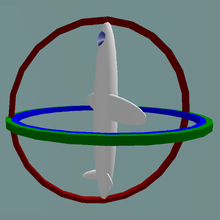

Gimbal Lock
Trava Gimbal
Uma gimbal é um anel suspenso de modo que possa girar em um eixo. Gimbals são normalmente aninhadas uma dentro da outra para acomodar rotação em torno de vários eixos.

Gimbal lock (do inglês "trava gimbal") é a perda de um grau de liberdade em um mecanismo tridimensional que ocorre quando os eixos de duas das gimbals são levados a uma configuração paralela, "travando" o sistema de forma que só possa girar em um espaço bidimensional.

Situação normal
As três gimbals são independentes.

Gimbal lock
Duas das três gimbals estão no mesmo plano.